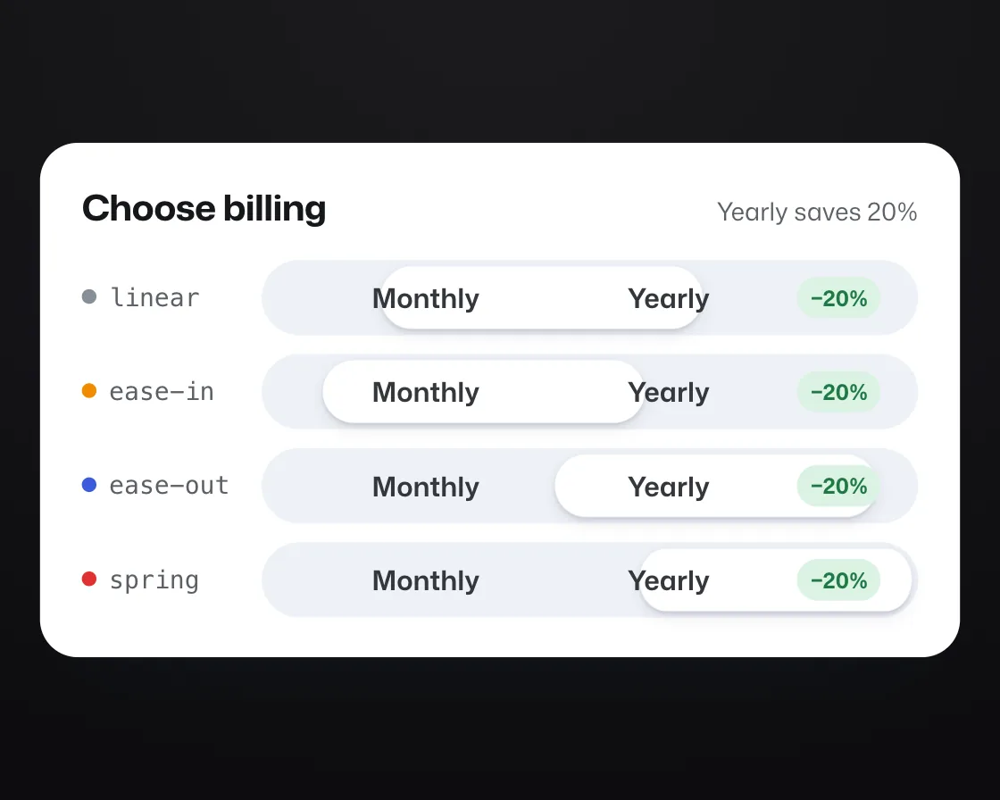

Easing curves race
Easing curves race is a DOM effect: same distance, same time, four easing curves. One plain JavaScript file with no dependencies; add it with npx motion-library add easing-race.

Open it live, tune it and copy the code
What is Easing curves race?
Four billing toggles switch together over the same distance and time; only the easing curve differs.
How does Easing curves race work?
Linear, ease-in, a strong ease-out and a spring run side by side; in the first tenth of a second ease-out is nearly there, which is why it feels responsive.
How do I add Easing curves race to my website?
- In your project folder, run
npx motion-library add easing-race. It writesanimations/easing-race.js. Needs Node 18 or newer. - Import it and call it with a container element that has a size:
import fx from './animations/easing-race.js'; const stop = fx(document.querySelector('#hero')); - Call
stop()to clean up, for example when a component unmounts.
Every setting below is also a flag, so you can install it already tuned: npx motion-library add easing-race --duration 3000.
What settings can I tweak?
| Setting | Flag | Default | Range | Step |
|---|---|---|---|---|
| Duration (ms) | --duration | 1000 | 400 to 3000 | 50 |
| Spring stiffness | --stiffness | 180 | 40 to 400 | 5 |
| Spring damping | --damping | 14 | 4 to 40 | 1 |
Specifications
- Renderer
- DOM (CSS and the Web Animations API)
- Category
- Basics
- Dependencies
- None
- File size
- 5.5 KB, unminified
- Interactive
- No: it plays on its own
- Reduced motion
- Respects prefers-reduced-motion
- Licence
- MIT-0: use it anywhere, no credit needed
Source code
// Easing curves race: four copies of the same Monthly / Yearly billing toggle, same distance, same time, four different curves.
// Linear feels mechanical, ease-in feels late, a strong ease-out feels instant, and a spring arrives like something with weight. That is why UI defaults to ease-out.
const PARAMS = { duration: 1000, stiffness: 180, damping: 14 };
export default function (stage) {
const reduce = matchMedia('(prefers-reduced-motion: reduce)').matches;
const AW = 440, AH = 246;
const root = document.createElement('div');
root.className = 'er-root';
root.innerHTML = `<style>
.er-root { position: absolute; inset: 0; background: #e9edf7; overflow: hidden; color: #15171a; font-family: "Mona Sans", system-ui, -apple-system, sans-serif; }
.er-board { position: absolute; left: 50%; top: 50%; width: ${AW}px; height: ${AH}px; box-sizing: border-box; padding: 18px 20px; background: #fff; border-radius: 18px; box-shadow: 0 1px 2px rgba(20,30,60,.06), 0 18px 40px -24px rgba(20,30,60,.35); }
.er-head { display: flex; justify-content: space-between; align-items: baseline; margin-bottom: 14px; }
.er-head h3 { margin: 0; font-size: 17px; font-weight: 700; letter-spacing: -0.015em; font-stretch: 106%; }
.er-head span { font-size: 12px; color: #5b6066; }
.er-lane { display: grid; grid-template-columns: 74px 1fr; align-items: center; gap: 12px; margin-top: 9px; }
.er-name { font: 500 12px/1 ui-monospace, Menlo, monospace; color: #5b6066; }
.er-name i { display: inline-block; width: 7px; height: 7px; border-radius: 50%; margin-right: 6px; background: var(--c); vertical-align: 1px; }
.er-track { position: relative; height: 36px; border-radius: 999px; background: #eef1f6; display: grid; grid-template-columns: 1fr 1fr; }
.er-track span { position: relative; z-index: 1; display: grid; place-items: center; font-size: 13px; font-weight: 620; color: #33373c; grid-auto-flow: column; gap: 6px; }
.er-track b { font-size: 10.5px; font-weight: 700; color: #1f7a45; background: #dcf3e4; padding: 3px 6px; border-radius: 999px; }
.er-pill { position: absolute; left: 3px; top: 3px; bottom: 3px; width: calc(50% - 3px); border-radius: 999px; background: #fff; box-shadow: 0 1px 2px rgba(20,30,60,.12), 0 3px 8px -2px rgba(20,30,60,.16); will-change: transform; }
</style>
<div class="er-board"><div class="er-head"><h3>Choose billing</h3><span>Yearly saves 20%</span></div></div>`;
const board = root.querySelector('.er-board');
const lanes = [
{ name: 'linear', c: '#868e96', f: t => t },
{ name: 'ease-in', c: '#f08c00', f: bezier(0.42, 0, 1, 1) },
{ name: 'ease-out', c: '#3b5bdb', f: bezier(0.23, 1, 0.32, 1) },
{ name: 'spring', c: '#e03131', spring: true },
];
for (const l of lanes) {
const lane = document.createElement('div'); lane.className = 'er-lane';
lane.style.setProperty('--c', l.c);
lane.innerHTML = `<span class="er-name"><i></i>${l.name}</span><div class="er-track"><div class="er-pill"></div><span>Monthly</span><span>Yearly <b>−20%</b></span></div>`;
board.append(lane); l.pill = lane.querySelector('.er-pill');
}
stage.append(root);
const fit = () => { const s = Math.min(stage.clientWidth / AW, stage.clientHeight / AH) * 0.92; board.style.transform = `translate(-50%, -50%) scale(${Math.min(s, 1.6)})`; };
const ro = new ResizeObserver(fit); ro.observe(stage); fit();
// Closed-form spring (mass 1): position from 0 to 1 at time t seconds.
function spring(t) {
const k = PARAMS.stiffness, c = PARAMS.damping, w0 = Math.sqrt(k), z = c / (2 * w0);
if (z < 1) { const wd = w0 * Math.sqrt(1 - z * z); return 1 - Math.exp(-z * w0 * t) * (Math.cos(wd * t) + (z * w0 / wd) * Math.sin(wd * t)); }
return 1 - Math.exp(-w0 * t) * (1 + w0 * t);
}
// Cycle: rest on Monthly, switch to Yearly, hold, switch back, hold.
const D = PARAMS.duration, rest = 700, hold = 1100;
const total = 2 * (rest + D + hold);
let raf, t0 = performance.now();
function frame(now) {
const T = (now - t0) % total, half = total / 2, back = T >= half, t = (back ? T - half : T) - rest;
for (const l of lanes) {
const p = t <= 0 ? 0 : l.spring ? spring(t / 1000) : l.f(Math.min(1, t / D));
const x = back ? 1 - p : p;
// Reduced motion: the pill does not travel; it fades in at its new side, each lane on its own curve.
if (reduce) { l.pill.style.opacity = t <= 0 ? 1 : Math.min(1, Math.max(0, p)); l.pill.style.transform = `translateX(${(t <= 0 ? +back : +!back) * 100}%)`; continue; }
// Past either end the spring squashes against the wall instead of leaving the track.
const over = x > 1 ? x - 1 : x < 0 ? x : 0;
l.pill.style.transformOrigin = x > 0.5 ? '100% 50%' : '0 50%';
l.pill.style.transform = `translateX(${(Math.min(1, Math.max(0, x)) * 100).toFixed(2)}%) scaleX(${(1 - Math.abs(over) * 1.6).toFixed(4)})`;
}
raf = requestAnimationFrame(frame);
}
raf = requestAnimationFrame(frame);
return () => { cancelAnimationFrame(raf); ro.disconnect(); root.remove(); };
}
// cubic-bezier(x1, y1, x2, y2) as a function of progress, solved with Newton's method.
function bezier(x1, y1, x2, y2) {
const cx = 3 * x1, bx = 3 * (x2 - x1) - cx, ax = 1 - cx - bx;
const cy = 3 * y1, by = 3 * (y2 - y1) - cy, ay = 1 - cy - by;
const X = t => ((ax * t + bx) * t + cx) * t, Y = t => ((ay * t + by) * t + cy) * t, dX = t => (3 * ax * t + 2 * bx) * t + cx;
return x => { let t = x; for (let i = 0; i < 8; i++) { const d = dX(t); if (Math.abs(d) < 1e-6) break; t -= (X(t) - x) / d; } return Y(Math.min(1, Math.max(0, t))); };
}